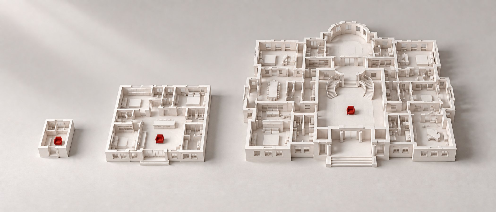

Микростудия
Кровать, стол на двоих, кухонный модуль и ванная. Такие лоты бывают только в апартаментах или в домах с разрешением до августа 2024 года. Покупают под сдачу или как городской ночлег.
«Зорге 9» (St Michael), 14 эт., 14,5 млн ₽ · источник
Разборы / Планировки
Разбор · сверка 3 октября 2026
На заметку: 16, 160 и 1 600 м² — каждая следующая квартира в десять раз больше, а человек в ней тот же. Удобной планировку делают не метры, а то, есть ли у каждого взрослого своя дверь и свой санузел. Ниже — двенадцать настоящих лотов от 16 до 2 371 м² в одном масштабе, пять решений, которые делают планировку удобной, и девять сценариев: пара, семья с коляской, три поколения, собака, велосипеды и гости с ночёвкой.

Подберём планировку под вашу семью
Заполните подбор: кто будет жить, сколько простора и какой бюджет — покажем, какие комнаты нужны, сколько это метров и в каких домах нашей базы такая квартира продаётся. Не хочется заполнять — позвоним и разберём голосом: +7 495 021-60-39.
Квартиры на 4+ комнаты — 4 % лотов бизнес-класса в нашей базе, в элите — 22 %. База NOTA, срез предложения по комнатности от 23 сентября 2026: 1 149 строк по 314 домам. Рыночные цифры — у каждой источник в конце страницы.
Шкала
Лоты, о которых пойдёт речь, на одной логарифмической шкале. Красным — лоты больше 1 000 м².
Площади — база NOTA (23 сентября 2026), карточки лотов на сайтах застройщиков, novostroev.ru и ЦИАН (3 октября 2026); «Дом спорта» — сделка, NF Group в пересказе РИА Недвижимость, 29 июля 2026.
С 1 августа 2024 года новые однокомнатные квартиры и студии в Москве — не меньше 28 м², двухкомнатные — не меньше 44 м² (без балконов, лоджий, террас и холодных кладовых). На апартаменты правило не распространяется, на проекты с разрешениями до этой даты — тоже. Поэтому в нашей базе ещё 73 строки студий и «однушек» в домах с квартирами (не апартаментами), где площадь начинается меньше 28 м²: Level Мичуринский — от 18,4, ЗИЛАРТ — от 17,8.
Пентхаусы на весь этаж — в 15 из 35 строящихся элитных проектов, 42 лота от 256 до 2 371 м² (Whitewill, август 2026). Средний пентхаус в продаже — 315 м² и 1,6 млрд ₽, крупнейший — 1 721 м² (Sminex, июль 2026). У других источников максимум другой: Коммерсантъ называет максимум 2 250 м², «Московская перспектива» — 2 371 м²; по нашей базе это лот «Лё Дома».
В нашей базе
Из чего состоит предложение по классам в базе NOTA. Доли считаем по числу лотов там, где источник его показывает.
| Класс | Домов с данными | Лотов | Студии | 1 спальня | 2 | 3 | 4+ | Квартир на этаже | Потолки |
|---|---|---|---|---|---|---|---|---|---|
| Бизнес | 107 | 17 818 | 13 % | 33 % | 34 % | 16 % | 4 % | 9 | 3,0 м |
| Премиум | 16 | 1 589 | 7 % | 21 % | 30 % | 26 % | 16 % | 5 | 3,2 м |
| Элитный | 17 | 790 | 1 % | 20 % | 27 % | 30 % | 22 % | 4 | 3,33 м |
| Делюкс | 10 | 287 | 0 % | 25 % | 31 % | 28 % | 15 % | 4 | 3,33 м |
База NOTA, срез 23 сентября 2026. «Квартир на этаже» и «потолки» — по всем домам класса, где поле заполнено (у делюкса — 3–4 дома, это наблюдение, а не закономерность). Для сверки «Метриум» (май 2026): квартир на этаже в бизнесе 9, в премиуме 7,6; потолки (июль 2024): бизнес 3,0 м, элит 3,33 м — совпадает с нашей базой.
| Класс | Студия | 1 | 2 | 3 | 4+ |
|---|---|---|---|---|---|
| Бизнес | 16,4 · 26,6–31,7 | 21,8 · 36,5–50,1 | 34,6 · 53,5–76,8 | 35,9 · 74,9–102,8 | 72,6 · 106–131 |
| Премиум | 26,7 · 29,9–34,2 | 26,6 · 47–64,7 | 36,2 · 67,3–111,4 | 55,2 · 107,5–146 | 77,5 · 152,5–186,7 |
| Элитный | 41 · 41–54 | 44,9 · 57,6–84,1 | 44,5 · 83,9–146,5 | 96,2 · 134–173 | 90 · 178–400 |
| Делюкс | — | 47,6 · 66–105,8 | 76,6 · 128,7–154,1 | 101,6 · 168–227 | 110 · 237–466 |
Площадь, м²: первое число — минимум по классу, дальше — типичный диапазон (медиана «от» и медиана «до» по домам). У застройщиков элиты и делюкса комнатность считается по спальням, поэтому «1» там часто означает евроформат на 60–100 м². Студии в премиуме и выше есть только в 7 домах из 147.
| Дом | Класс в базе | От, м² | До, м² | Разница |
|---|---|---|---|---|
| Остров (Донстрой) | бизнес | 28,0 | 539,6 | 19× |
| Лё Дом (ЛСР) | делюкс | 126,8 | 2 371 | 19× |
| Лаврушинский (Sminex) | элитный | 66,4 | 979,5 | 15× |
| Capital Towers | бизнес | 49,4 | 693,7 | 14× |
| Level Мичуринский | бизнес | 18,4 | 248,4 | 13× |
| Хай Лайф (Пионер) | бизнес | 23,9 | 321,4 | 13× |
| Крылатская 33 | бизнес | 30,2 | 388,2 | 13× |
| Резиденция 1864 | делюкс | 290 | 1 063 | 4× |
База NOTA, 23 сентября 2026. Дома без отдельной страницы открываются на карте.
Что бывает
Реальные лоты в продаже на 3 октября 2026, от апартамента на 16 м² до резиденции на 403 м². Все планы перерисованы в одном стиле и одном масштабе: под каждым шкала 0–1–2 м. Нажмите на план, чтобы открыть крупно.
Кровать, стол на двоих, кухонный модуль и ванная. Такие лоты бывают только в апартаментах или в домах с разрешением до августа 2024 года. Покупают под сдачу или как городской ночлег.
«Зорге 9» (St Michael), 14 эт., 14,5 млн ₽ · источник
Комната 13,1 м² с кухней в нише, санузел 3,1 м². Агрегатор называет её однокомнатной, по сути это студия с прихожей. 33 млн ₽ — около 1,37 млн за метр.
«Хай Лайф» (Пионер), 3 эт. · источник
Кухня-гостиная 19,4 м², коридор 5,3 м², санузел 3,7 м². Чуть больше московского минимума в 28 м², и почти пятую часть площади занимает коридор.
«Остров» (Донстрой), 2 эт., 24,5 млн ₽ · застройщик
Кухня-гостиная 28,6 м² на два окна, спальня 17,3 м², один санузел. Удобно одному или паре. Гостя положить некуда, второго санузла нет. Вопрос архитектору: можно ли отрезать от кухни-гостиной комнату 10–12 м² с окном.
«Крылатская 33», 29 эт., 49,6 млн ₽ · источник
Отдельная кухня 13 м², гостиная 24,8 м², спальня 14,1 м² с гардеробной 2,3 м². Санузлов два: 3,5 м² у входа и 3,6 м² ближе к спальне, ещё постирочная 2,2 м² и гардеробная в холле. На 18 м² больше евродвушки, зато запахи кухни остаются на кухне, а у гостя есть свой санузел.
«Крылатская 33», 3 эт., 40,2 млн ₽ · источник
Спальни 17,8 и 17,3 м² смотрят на разные стороны. У каждой свой санузел (4,7 и 5,0 м²) и гардеробная, а между ними — общая зона: кухня 14,4, гостиная 17,9 и гостевой санузел 4,0 м². Подходит двум парам, взрослому ребёнку, бабушке, супругам с разным режимом.
«Крылатская 33», 4 эт., 56,5 млн ₽ · источник
Три спальни (18,1, 19,7 и 11,2 м²), кухня-гостиная 36,6 м² и два санузла по 5 с небольшим метров. Детские помещаются, а на мастер-блок родителей площади уже не хватает. В бизнес-классе 4-комнатные начинаются с 72,6 м² (Level Мичуринский), евро-3 — с 47,8 м² (Evopark Измайлово).
«Остров», 11 эт., 113,3 млн ₽ · застройщик
Четыре спальни (12,8, 20,9, 20,9 и 14,4 м²), гостиная 28,9 м² и отдельная кухня 14,1 м², три санузла, коридор 13,4 м². В «Острове» несколько таких лотов на 143,7–145,2 м² — типовой семейный формат дома.
«Остров», 8 эт., 133,2 млн ₽ · застройщик
Мастер-спальня 18,2 м² с ванной 12 м² и гардеробной 16,6 м², ещё две спальни, кухня-гостиная 47,7 м² с камином, постирочная и терраса 61,3 м². 4-й этаж шестиэтажного корпуса. За метр — 2,17 млн ₽, примерно вдвое дороже 4-комнатной на 106 м² в башне того же квартала. Платят за соседей по этажу и террасу.
«Остров», 4/6 эт., 395,8 млн ₽ · застройщик
Гостиная 62,7 м² с местом под камин, игровая 22,9 м², кабинет 10 м², постирочная 7,8 м², спальни и терраса 37 м². Комнату под детей и комнату под работу здесь заложили сразу.
«Остров», 22/22 эт., 367,1 млн ₽ · застройщик
Кухня-гостиная 81,4 м² с камином, мастер-спальня 20,3 м² с гардеробной 9,9 и ванной 10,1 м², две детские по 20–22 м², кабинет 15 м², комната персонала 6,9 м² и полукруглая терраса 44 м². Шестикомнатных в доме пять, площадью от 215 до 262 м².
«Остров», 3 эт., 545,5 млн ₽ · застройщик
Пять спален (самая большая — 47,5 м² с ванной 10,3 м²), кабинет 19,2, столовая 47,6, гостиная 33,7 и ещё одна гостиная 22,6 м² с кухней вдоль стены, прачечная 6,9 и три гардеробные до 17,2 м². Коридоры — 54,3 м², 13 % площади: в резиденции метры тратят и на то, чтобы маршруты хозяев, детей и персонала не пересекались. Потолки до 3,5 м.
«Лё Дом» (ЛСР), 3/5 эт., 2,57 млрд ₽ · ЦИАН · страница дома
Планы перерисованы NOTA по планировкам застройщиков. Масштаб «Крылатской 33» снят с исходника; у остальных восстановлен по площади квартиры, погрешность шкалы до 5–10 %. Мебель — как на исходных планах.
| Формат | Цифры | Где посмотреть |
|---|---|---|
| Двухуровневые | 315 лотов, 0,8 % предложения; бизнес — в среднем 126,8 м², элит и делюкс — 195 м². Лидер — ФСК (35 лотов, 97,5–252 м²) | Level Мичуринский: 8 комнат, 248,4 м², 151,9 млн ₽; «Архитектор» (ФСК): пентхаус 252 м² |
| С террасой | 2–3 % предложения, 390 лотов; терраса в среднем 50–60 м², квартира — 180 м², наценка до 30 % | «Остров» — 10 лотов с террасами; «Тишинский бульвар» — 13; «Фрунзенский» — 16 |
| Этаж целиком | 42 лота в 15 элитных проектах, 256–2 371 м², 2,7–12,6 млн ₽ за метр | Brusov — 546 м², лифт в квартиру и блок персонала с сервисным лифтом |
| С бассейном в квартире | единичные лоты | «Лаврушинский»: 664 м², бассейн 32,2 м², терраса 250 м², пять спален с ванными, 4,8 млрд ₽ |
| Вилла на крыше | 837–974 м², сады на крыше | «Бадаевский» (Capital Group), семь «небесных вилл» |
| Таунхаус в центре | 975–1 000 м², четыре уровня, спа в цоколе | Stella di Mosca, Большая Никитская |
| Собранная из нескольких | 5–10 % квартир в премиальных ЖК покупают под объединение; легализация 75–200 тыс ₽ | «Крылатская 33»: выкуплены пять этажей, 15 квартир на 1,3 тыс м², под несколько поколений одной семьи |
Мир Квартир / «Метриум» (июль 2026), Мир Квартир (май 2026), Московская перспектива / Whitewill (август 2026), РБК (январь и май 2026), Коммерсантъ / ГК «Основа» (ноябрь 2025), badaevsky.com; лоты Level и «Архитектора» — база NOTA.
Подбор планировки
Отметьте, кто будет жить и как вы живёте. Подбор покажет список комнат с метрами, как такая квартира называется в объявлениях и в каких домах из нашей базы она продаётся сейчас.
Принципы
Санузел над чужой жилой комнатой, несущие стены и диафрагмы, вентканалы, радиаторы на лоджии (постановление Москвы 508-ПП).
Минимумы СП 54: общая комната 16 м² (в «однушке» 14), спальня 8 м² (на двоих 10), кухня 8 м². Отрезая спальню от кухни-гостиной, проверьте оба минимума и окно.
Бизнес-класс продаётся в основном без отделки: 73,8 % лотов, white box — 20,6 % (STONE, ноябрь 2025). Перегородки ещё можно сдвинуть в пределах проекта.
Рынок
| Что | Было | Стало | Источник |
|---|---|---|---|
| Средняя площадь, бизнес | 73 м² (2020) | 57 м² (лето 2025) → 60,6 м² (итог 2025) | «Метриум» в пересказе РБК и metrium.ru |
| Средняя площадь, премиум | 114,4 м² (2016) | 77,9 м² (2026) | «Метриум», июль 2026 |
| Доля 4+ комнат в премиуме | 18,5 % | 7,2 % | «Метриум», июль 2026 |
| Доля студий в премиуме | 2,6 % | 6,1 % | «Метриум», июль 2026 |
| Лоты до 40 м² в сделках бизнеса | 17 % (2020) | 42 % (ноябрь 2025) | STONE, январь 2026 |
| Спрос на семейные проекты в премиуме | 65–75 % (2024–2025) | 90 % (I полугодие 2026) | Финансы Mail, сентябрь 2026 |
| Рост цены метра, I полугодие 2026 | 1-комнатные +5,4 % | 4-комнатные +9,8 % | Мир Квартир, июль 2026 |
Всё — цены и структура предложения, не сделок, кроме строки STONE. Номинальные цифры, без поправки на инфляцию. Застройщики режут площади, а покупатели премиума всё чаще ищут семейные форматы — отсюда объединение соседних лотов.
Кому что подходит
Цифры в строках «Сколько» — наш ориентир, а не норматив: собраны из источников ниже и правила «у каждого взрослого своя дверь». Под каждым сценарием — ссылка на подбор с таким составом семьи.
Формат. Студия 28–35 м², евро-2 45–60 м²
Сколько. 1 санузел; гардеробная или шкаф 2–3 м пог.; место под стиральную машину не в кухне
В доме. Коворкинг, фитнес, мейлрум — дом компенсирует метры квартиры
Пример. Студия 28,4 м² в «Острове», евро-2 59 м² в «Крылатской 33»
Формат. Евро-3 или классическая двушка с детской от 10 м²
Сколько. 2 санузла (ванна, не только душ); прихожая под коляску 1,5–2 м²; постирочная или ниша
В доме. Колясочная в лобби (часто совмещена с велокомнатой, до 30 м²), лифт без ступенек от входа, грузовой лифт
Нет данных. Цифр по безбарьерным входам в бизнес-классе не нашли
Формат. 4–5 комнат, 105–145 м²
Сколько. Мастер-блок родителей + детская на каждого ребёнка + 2–3 санузла; кладовая в квартире 2–4 м² или келлер
В доме. Школа и сад рядом пешком (в проектах бизнеса — у 44 %, премиума — у 15 %)
Пример. 5 комнат 144 м² в «Острове»; пентхаус 233 м² с игровой
Формат. Две мастер-спальни в разных крыльях, 105–130 м²; или две соседние квартиры
Сколько. Свой санузел у старшего поколения, без порогов, с поручнями; комната ближе к входу
В доме. Лифт, лавочки во дворе, поликлиника и аптека рядом
Пример. 108,9 м² в «Крылатской 33»; там же покупают этажи целиком под несколько поколений
Формат. От 200–250 м², где есть комната персонала
Сколько. Комната около 15 м² и свой душ — обязательно; под персонал уходит до 10 % площади; в больших квартирах — отдельный вход
В доме. Сервисный лифт (Brusov)
Пример. «Лё Дом» 403 м²: прачечная, кабинет, разведённые коридоры
Формат. Любой, но прихожая от 4 м² и пол без ковров
Сколько. Место под лежанку вне прохода; душевой трап или поддон в санузле — мыть лапы дома
В доме. Лапомойка в лобби: ÁLIA, «Остров», Lucky, «Первый Нагатинский», «Ривер Парк Кутузовский». Площадка для выгула или дрессировки: «Остров» — около 720 м²
Рынок. Опции для животных есть в 50 % проектов бизнеса (НДВ, 2025)
Формат. Не в квартире: ни евро-2, ни 150 м² не рассчитаны на 4 велосипеда
Сколько. Келлер 4–6 м² на семью или место для малого транспорта в паркинге
В доме. EVER: 348 кладовых и 183 места для малого транспорта на 1 097 квартир. Велокомната у входа с рампой
Нет данных. Веломастерских и ски-румов в Москве не нашли
Формат. Кухня-гостиная от 35 м², остров
Сколько. Гостевой санузел у входа обязательно; гостевая спальня с душем, если гости остаются ночевать
В доме. Лаунж или зал для приёмов, терраса на крыше, звукоизоляция между квартирами (данных в дБ застройщики не раскрывают)
Тренд. Гостевую спальню считают лишней и отдают под кабинет или гардеробную (Sminex, 2026)
Формат. Кабинет 10–17 м² с дверью, лучше у входа, не в спальном крыле
Сколько. 91 % покупателей элитного жилья хотят кабинет (Sminex, 2026); в бизнесе его заменяет коворкинг в доме
Пример. Кабинет 19,2 м² в «Лё Доме», 10 м² в пентхаусе «Острова»
В одном и том же доме бизнес-класса продаются квартиры от 28 до 540 м², так что класс дома ничего не говорит о планировке. Квартиру выбирают по числу взрослых, которым нужна своя дверь и свой санузел, а не по числу комнат. Евроформат экономит метры для одного-двух человек и начинает мешать, когда в доме появляется третий взрослый, ребёнок старше пяти лет или гость с ночёвкой.
Источники
Обложка сгенерирована для NOTA. Собрано 3 октября 2026. Цифры из пересказов СМИ приведены со ссылкой на пересказ; где первоисточник отличается, верим первоисточнику.